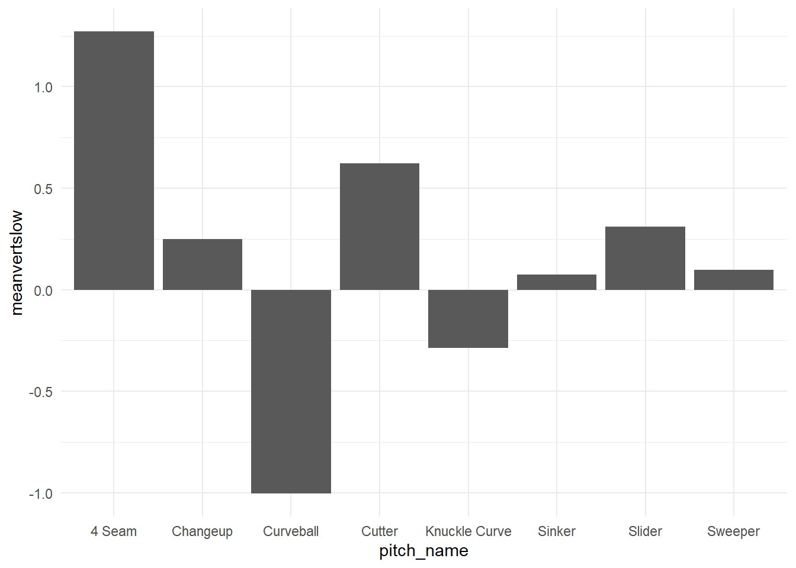

# Reading in our player name and player data datasetslibrary(readr)library(tidyverse)
── Attaching core tidyverse packages ──────────────────────── tidyverse 2.0.0 ──
✔ dplyr 1.1.4 ✔ purrr 1.0.2
✔ forcats 1.0.0 ✔ stringr 1.5.1
✔ ggplot2 3.5.1 ✔ tibble 3.2.1
✔ lubridate 1.9.3 ✔ tidyr 1.3.1
── Conflicts ────────────────────────────────────────── tidyverse_conflicts() ──
✖ dplyr::filter() masks stats::filter()
✖ dplyr::lag() masks stats::lag()
ℹ Use the conflicted package (<http://conflicted.r-lib.org/>) to force all conflicts to become errors
# Data from first half of 2024 season for every playerbaseballdata <-read_csv("../data/swing_data.csv")
Rows: 346250 Columns: 94
── Column specification ────────────────────────────────────────────────────────
Delimiter: ","
chr (16): pitch_type, player_name, events, description, des, game_type, sta...
dbl (69): release_speed, release_pos_x, release_pos_z, batter, pitcher, zon...
lgl (8): spin_dir, spin_rate_deprecated, break_angle_deprecated, break_len...
date (1): game_date
ℹ Use `spec()` to retrieve the full column specification for this data.
ℹ Specify the column types or set `show_col_types = FALSE` to quiet this message.
# Pitcher name dataplayerdata <-read_csv("../data/player_data.csv")
Rows: 3380 Columns: 45
── Column specification ────────────────────────────────────────────────────────
Delimiter: ","
chr (34): IDPLAYER, PLAYERNAME, BIRTHDATE, FIRSTNAME, LASTNAME, TEAM, LG, PO...
dbl (11): MLBID, CBSID, NFBCID, ESPNID, BPID, YAHOOID, ROTOWIREID, FANDUELID...
ℹ Use `spec()` to retrieve the full column specification for this data.
ℹ Specify the column types or set `show_col_types = FALSE` to quiet this message.
# Data from entire 2024 season, only containing qualified pitcherspitcherdata <-read_csv("../data/pitcher_data.csv")
Rows: 107 Columns: 31
── Column specification ────────────────────────────────────────────────────────
Delimiter: ","
chr (1): last_name, first_name
dbl (30): player_id, year, ab, k_percent, p_era, avg_swing_speed, fast_swing...
ℹ Use `spec()` to retrieve the full column specification for this data.
ℹ Specify the column types or set `show_col_types = FALSE` to quiet this message.
# Choosing relevant variables from name datasetplayerdataclean <- playerdata %>%select(PLAYERNAME, LASTNAME, MLBID, THROWS)
# Data cleaning including selecting relevant variables that might be useful in our analysis, joining datasets to include pitcher's names in our main dataset, and filtering out any data points that are NA for bat_speed and swing_length (since we will rely heavily on these variables for our analysis), as well as any data points that don't involve any swing being made(takes, hit by pitches, bunts, etc.)baseballdataclean <- baseballdata %>%select(game_date, release_speed, player_name, events, zone, stand, bb_type, balls, strikes, pfx_x, pfx_z, outs_when_up, inning, hit_distance_sc, launch_angle, launch_speed, effective_speed, release_spin_rate, launch_speed_angle, estimated_ba_using_speedangle, estimated_woba_using_speedangle, woba_value, bat_score, fld_score, pitch_name, pitcher, bat_speed, swing_length, description)baseballdataclean2 <- baseballdataclean %>%left_join(playerdataclean, by =c("pitcher"="MLBID"))baseballdataclean2 <- baseballdataclean2 %>%mutate(pitch_name =recode(pitch_name, "4-Seam Fastball"="4 Seam"))baseballdataclean2 <- baseballdataclean2 %>%filter(bat_speed !='NA') %>%filter(swing_length !='NA') %>%filter(!description %in%c("ball", "called_strike", "blocked_ball", "pitchout", "hit_by_pitch", "foul_bunt","missed_bunt", "bunt_foul_tip"))baseballdataclean2 <- baseballdataclean2 %>%filter(launch_speed !='NA') %>%mutate(teamwinning =ifelse(bat_score > fld_score, TRUE, FALSE)) %>%mutate(sameside =ifelse(THROWS == stand, TRUE, FALSE)) %>%group_by(PLAYERNAME) %>%mutate(n =n())# Calculate means for each numeric variablemean_summary <- baseballdataclean2 %>%filter(n >50) %>%group_by(PLAYERNAME) %>%summarise(across(where(is.numeric), mean, na.rm =TRUE))
Warning: There was 1 warning in `summarise()`.
ℹ In argument: `across(where(is.numeric), mean, na.rm = TRUE)`.
ℹ In group 1: `PLAYERNAME = "A.J. Minter"`.
Caused by warning:
! The `...` argument of `across()` is deprecated as of dplyr 1.1.0.
Supply arguments directly to `.fns` through an anonymous function instead.
# Previously
across(a:b, mean, na.rm = TRUE)
# Now
across(a:b, \(x) mean(x, na.rm = TRUE))
baseballdataclean2 %>%filter(launch_speed !='NA') %>%ggplot(aes(x = bat_speed, y = launch_speed)) +geom_point() +geom_smooth(method ='lm', se =TRUE) +labs(title ="Relationship Between Bat Speed and Exit Velocity", y ="Exit Velocity") +theme_minimal()
`geom_smooth()` using formula = 'y ~ x'
baseballdataclean2 %>%ggplot(aes(x = bat_speed, y = swing_length)) +geom_point() +geom_smooth(method ='lm', se =TRUE) +labs(title ="Relationship Between Bat Speed and Swing Length") +theme_minimal()
`geom_smooth()` using formula = 'y ~ x'
pitcherdata %>%ggplot(aes(x = fast_swing_rate, y = hard_hit_percent)) +geom_point() +geom_smooth(method ='lm') +labs(title ="Relationship Between Hard hit rate and Average Swing Speed (Qualified)") +theme_minimal()
`geom_smooth()` using formula = 'y ~ x'
pitcherdata %>%ggplot(aes(x = fast_swing_rate, y = p_era, color = avg_swing_speed)) +scale_color_gradient(low ="blue", high ="red") +geom_point() +geom_smooth(method ='lm') +theme_minimal() +labs(title ="Relationship Between Average Swing Speed Against and Pitcher ERA (Qualified)")
`geom_smooth()` using formula = 'y ~ x'
Warning: The following aesthetics were dropped during statistical transformation:
colour.
ℹ This can happen when ggplot fails to infer the correct grouping structure in
the data.
ℹ Did you forget to specify a `group` aesthetic or to convert a numerical
variable into a factor?
pitcherdata %>%ggplot(aes(x = hard_hit_percent, y = p_era)) +geom_point() +geom_smooth(method ='lm') +theme_minimal() +labs(title ="Relationship Between Hard Hit Rate and Pitcher ERA")
`geom_smooth()` using formula = 'y ~ x'
THE FOLLOWING ANALYSIS USES THE DATASET FROM THE FIRST HALF OF THE 2024 SEASON
# Generating a dataset of the 25 pitchers that batters swing the fastest against, arranged by their average bat speed against with a count of their number of data pointspitcheraverage <- baseballdataclean2 %>%group_by(PLAYERNAME) %>%summarize(avg_bat_speed =mean(bat_speed), n =n()) %>%arrange(desc(avg_bat_speed))pitcheraverage
# A tibble: 568 × 3
PLAYERNAME avg_bat_speed n
<chr> <dbl> <int>
1 Forrest Whitley 78.3 5
2 Connor Brogdon 76.5 7
3 Tejay Antone 74.1 2
4 Paolo Espino 74.1 25
5 Josh Rojas 73.9 9
6 Nick Loftin 73.6 3
7 Luis Guillorme 73.4 10
8 Wander Suero 73.3 1
9 Austin Davis 73.2 8
10 Jackson Rutledge 73.2 3
# ℹ 558 more rows
# A tibble: 25 × 3
PLAYERNAME avg_bat_speed n
<chr> <dbl> <int>
1 Paolo Espino 74.1 25
2 Joey Lucchesi 73.1 21
3 Cole Sulser 73.0 22
4 Bryan Shaw 72.9 25
5 Max Scherzer 72.9 52
6 Bryan Baker 72.7 59
7 Amir Garrett 72.5 23
8 Colin Poche 72.2 88
9 Daniel Lynch 72.2 114
10 Brandon Bielak 72.1 111
# ℹ 15 more rows
# Calculating average spin rate by pitch type for the top 25 pitchers with the highest average swing speed againsttop25allfast <-top25fast %>%left_join(baseballdataclean2, by =c("PLAYERNAME"="PLAYERNAME"))fastspins <- top25allfast %>%group_by(pitch_name) %>%summarize(meanspinfast =mean(release_spin_rate, na.rm =TRUE))fastspins
# Generating a dataset of the top 25 pitchers who generate the slowest bat speeds against, arranged by their average bat speed against with a count of their number of data pointspitcheraverageslow <- baseballdataclean2 %>%group_by(PLAYERNAME) %>%summarize(avg_bat_speed =mean(bat_speed), n =n()) %>%arrange(avg_bat_speed)pitcheraverageslow
# A tibble: 568 × 3
PLAYERNAME avg_bat_speed n
<chr> <dbl> <int>
1 Matthew Festa 59.1 4
2 Pablo Reyes 63.6 6
3 Prelander Berroa 64.5 2
4 Jake Cousins 65.1 15
5 Danny Mendick 65.5 3
6 Luke Williams 65.8 4
7 Joan Adon 66.0 22
8 Dan Altavilla 66.9 22
9 Brett De Geus 67.0 16
10 Ben Joyce 67.1 61
# ℹ 558 more rows
# A tibble: 25 × 3
PLAYERNAME avg_bat_speed n
<chr> <dbl> <int>
1 Jake Cousins 65.1 15
2 Joan Adon 66.0 22
3 Dan Altavilla 66.9 22
4 Brett De Geus 67.0 16
5 Ben Joyce 67.1 61
6 Wade Miley 67.2 38
7 Davis Daniel 67.4 30
8 Jacob Bird 67.4 97
9 Orion Kerkering 67.4 148
10 Eduardo Salazar 67.5 16
# ℹ 15 more rows
# Calculating average spin rate by pitch type for the top 25 pitchers with the lowest average swing speed againsttop25allslow <-top25slow %>%left_join(baseballdataclean2, by =c("PLAYERNAME"="PLAYERNAME"))slowspins <- top25allslow %>%group_by(pitch_name) %>%summarize(meanspinslow =mean(release_spin_rate, na.rm =TRUE))slowspins
# Showing Spin difference on average between pitchers who generate slow bat speeds vs pitchers who generate fast bat speedsspindiff <- fastspins %>%filter(pitch_name !='Split-Finger') %>%left_join(slowspins, by =c("pitch_name"="pitch_name")) %>%mutate(spindiff = meanspinslow - meanspinfast)spindiff
spindiff %>%ggplot() +geom_col(aes(x = pitch_name, y = spindiff, fill = spindiff)) +scale_fill_gradient(low ="cyan", high ='navy') +theme_minimal() +labs(title ="Average Spin Rate Difference: Pitchers With Fast vs Slow Bat Speeds Against", caption ="Calculation: spin of pitchers with slow bat speeds against - spin of pitchers with fast bat speeds against", x ="Pitch Type", y ="Difference In Average Spin Rate")
velodiff %>%ggplot() +geom_col(aes(x = pitch_name, y = velodiff, fill = velodiff)) +scale_fill_gradient(low ="pink", high ='violet') +theme_minimal() +labs(title ="Average Velocity Difference: Pitchers With Fast vs Slow Bat Speeds Against", caption ="Calculation: velo of pitchers with slow bat speeds against - velo of pitchers with fast bat speeds against", x ="Pitch Type", y ="Avg Velo Difference")
Warning: Removed 1 row containing missing values or values outside the scale range
(`geom_col()`).
slowdiffplot <- slowdiff %>%ggplot() +geom_col(aes(x = pitch_name, y = slowdiffspeed, fill = slowdiffspeed)) +labs(y ="Eff Speed - Actual Speed", title ="Difference in effective release speed vs actual release speed for slow bat speeds") +scale_fill_gradient(low ="lightgreen", high ='darkgreen') +theme_minimal()
fastdiffplot <- fastdiff %>%ggplot() +geom_col(aes(x = pitch_name, y = fastdiffspeed, fill = fastdiffspeed)) +labs(y ="Eff Speed - Actual Speed", title ="Difference in effective release speed vs actual release speed for fast bat speeds") +scale_fill_gradient(low ="orange", high ='red') +theme_minimal()
library(gridExtra)
Attaching package: 'gridExtra'
The following object is masked from 'package:dplyr':
combine
slowmove %>%ggplot(aes(x = pitch_name, y = meanvertslow)) +geom_col() +theme_minimal()

fastmove %>%ggplot(aes(x = pitch_name, y = meanvertfast)) +geom_col() +theme_minimal()
slowmove %>%ggplot(aes(y = pitch_name, x = meanhorizslow)) +geom_col() +theme_minimal()
fastmove %>%ggplot(aes(y = pitch_name, x = meanhorizfast)) +geom_col() +theme_minimal()
Problem - no split fingers among top 25 slow pitchers. maybe expand to 50?
DO SAME ANALYSIS AS ABOVE WITH FULL SEASON DATA
Or could do scatterplot of all fast and all slow datasets - showing every oberservation with vert on y axis and horiz on x axis with color/shape representing bat speed (or maybe faceted by bat speed)
R Squared Analysis
correlations <-suppressWarnings(cor(pitcherdata %>%select(where(is.numeric))))# Extract correlations with yy_correlations <- correlations["avg_swing_speed",]variables_to_remove <-c("year","player_id","ab","avg_swing_speed") # Replace with your variable names# Remove specified variables from y_correlationsy_correlations <- y_correlations[names(y_correlations) %in% variables_to_remove ==FALSE]# Sort correlationsy_correlations <-sort(y_correlations, decreasing =TRUE)print(y_correlations)
Our data was collected using Statcast, by CSAS (Connecticut Sports Analytics) to analyze pitcher-batter interactions in MLB. Every MLB ballpark is equipped with Statcast tracking technology, which is used to acquire the data. See this link statcastlink for more background on Statcast. It contains data on 346,250 Major League Baseball plate appearances from 4/2/2024 to 6/30/2024 (first half of the 2024 regular season), as well as 94 different variables.
Cumulative season data created through custom Baseball Savant Leaderboard: savantlink
Data Codebook
The codebook for our data can be found at this link: codebooklink
Project Topic
The effect of pitchers on batters’ swing speeds and swing lengths
Questions We Wish To Explore
Do pitchers modify batters’ behavior? That is do batters’ swing speeds differ depending on something pitchers do?
Do some pitchers elicit different swing speeds and swing lengths than others? That is, are some pitchers better at slowing down batters’ swing speeds or making their swings longer?
If pitchers do affect a batter’s swing speed/length, what is the cause of this? Is it pitch speed, pitch movement, or something else?
Plan to Further Explore Questions
We plan to improve the visualizations we have already created, as well as create more visualizations that explore the batter/pitcher interaction. We found another dataset as suggested in our Milestone 1 Feedback, and we would like to better integrate this additional dataset into our analysis. We would also like to have a concrete answer to our third broad question, and begin interpreting our results.